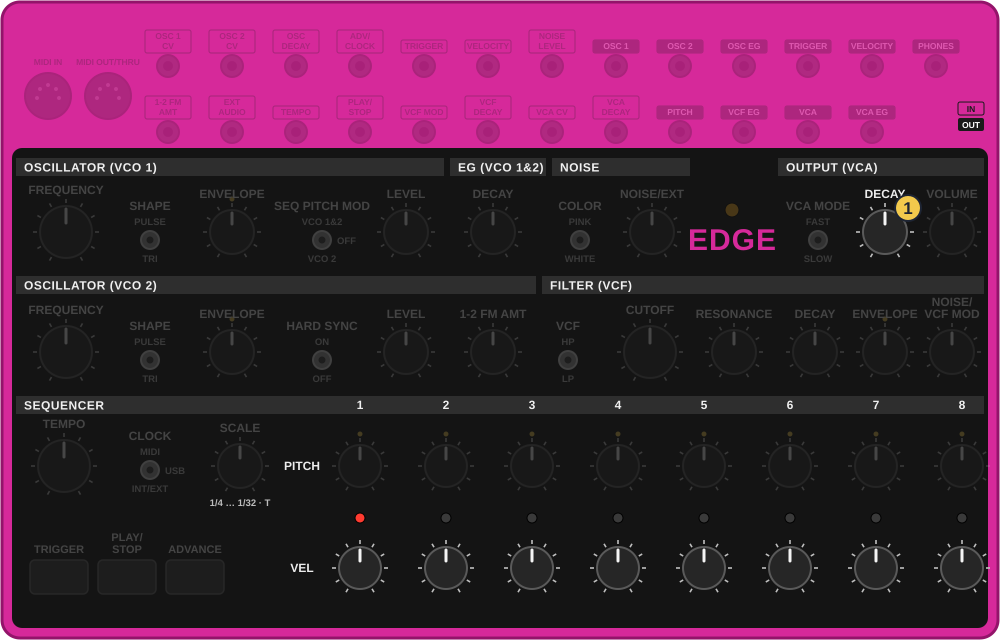
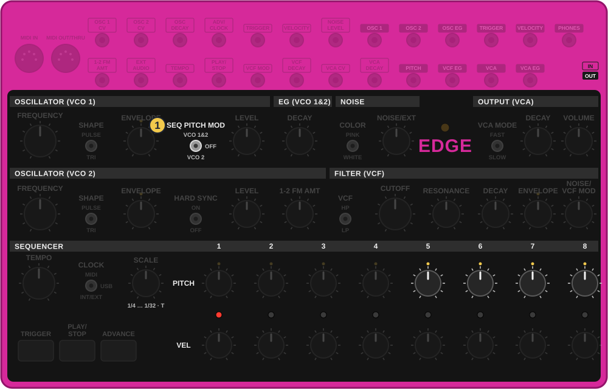
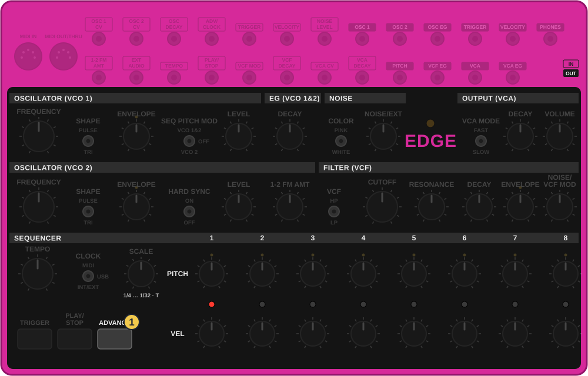
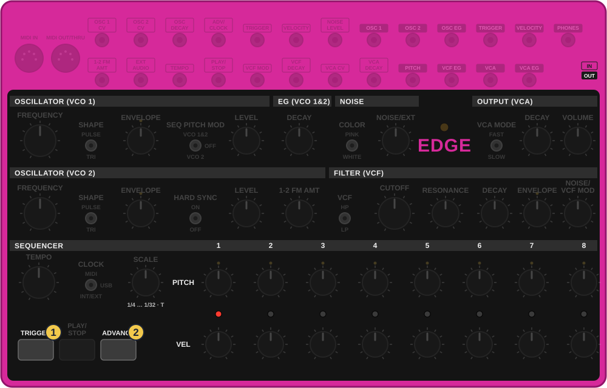
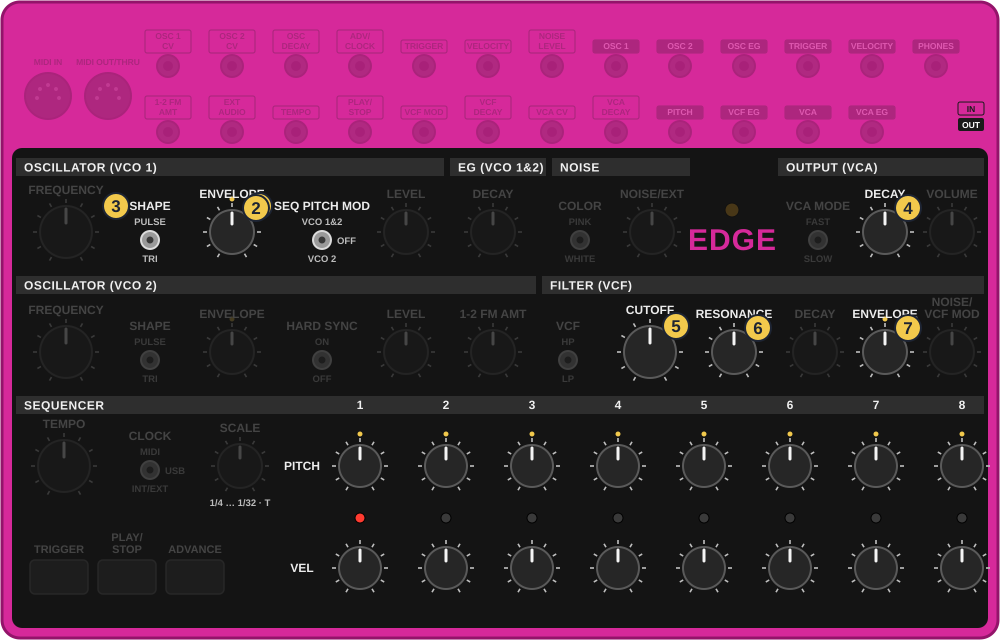
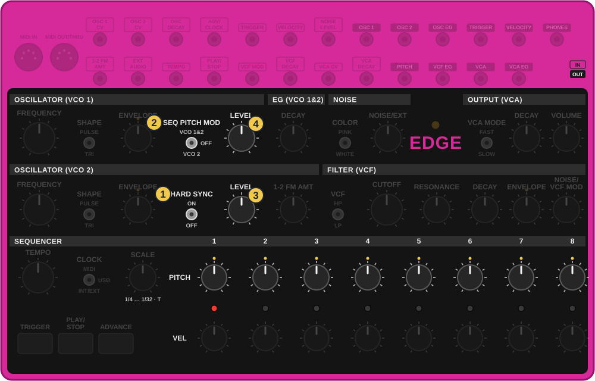
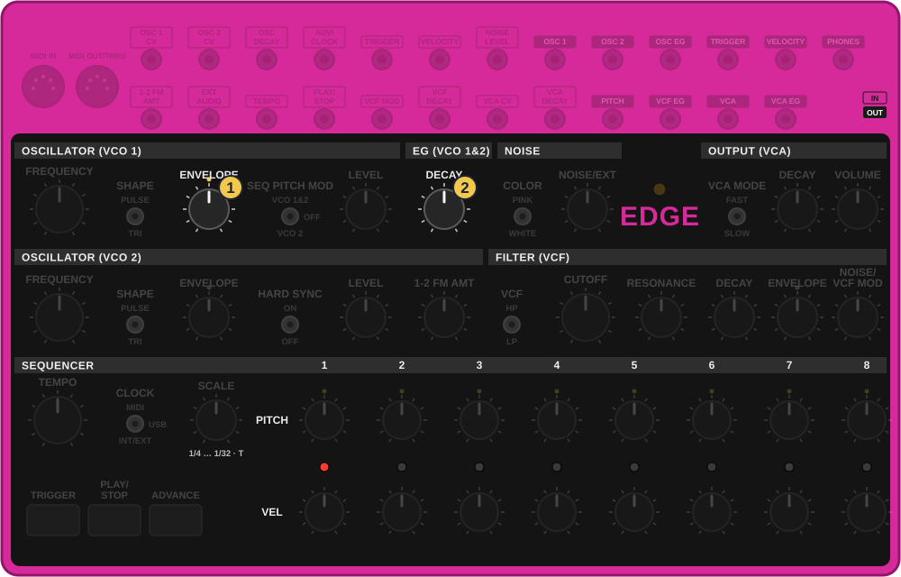
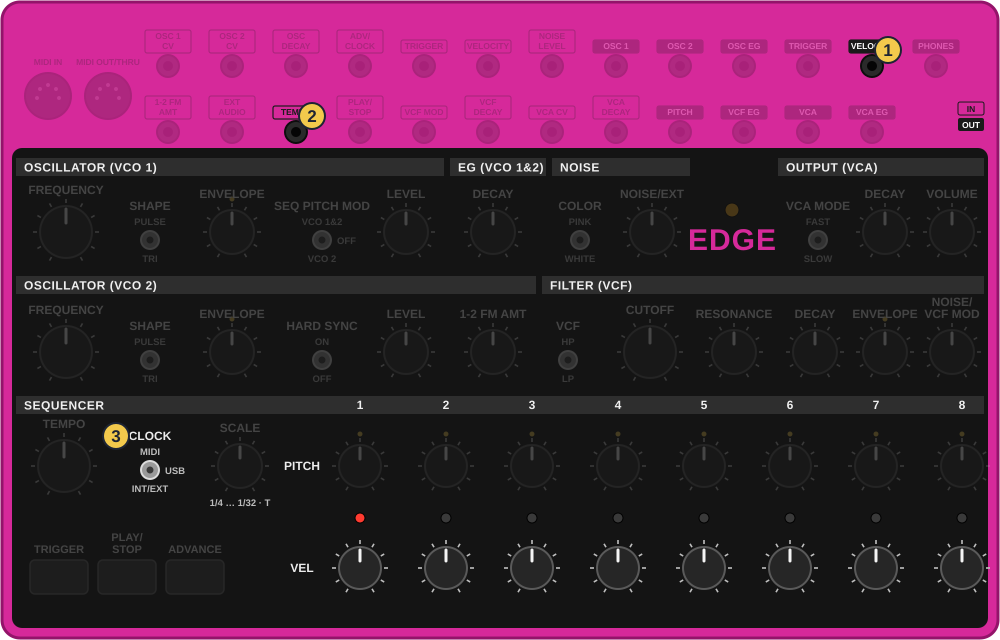
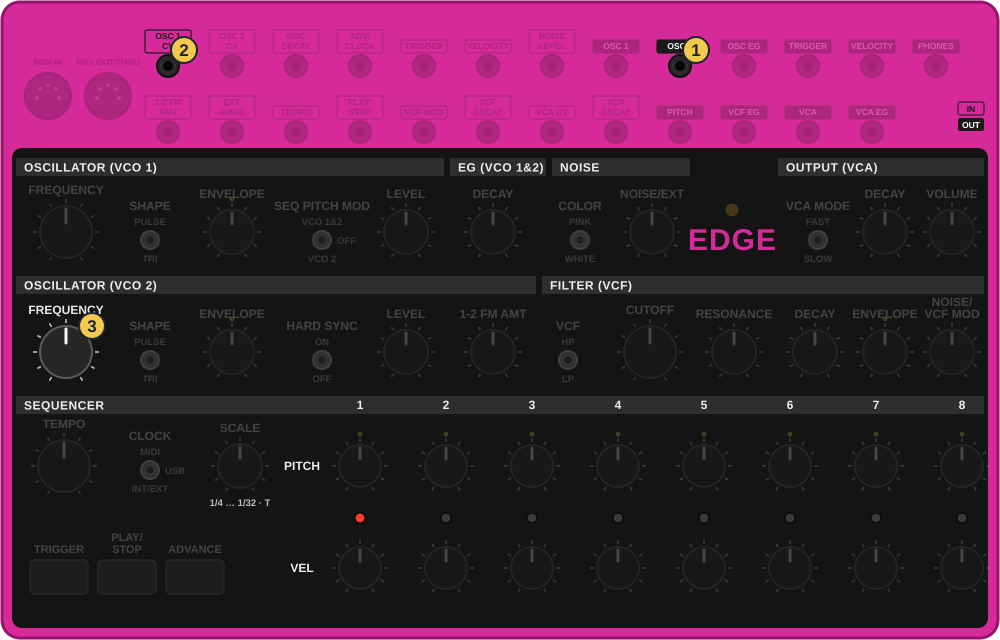

איך משתמשים
- נקודת הבסיס: הקצב משיעור 3 מנגן. כל טריק שמשנה משהו נגמר ב״חזרה״ לשם.
- לפני ניסוי: צלם את הפאנל. האדג׳ לא שומר כלום.
- הסימנים: ✋החזק 👆לחץ ⟳סובב 🖐שחרר.
טריקים קצרים לתוך הג׳אם, רק לאדג׳: משחקים עם הצעדים, צלילים שלא היו בשיעורים, וכבל אחד שמשנה את הגרוב. כל כרטיס: מה זה, למה, ואיך. טריקים חדשים שתביא נכנסים לכאן.
באדג׳ שורת VEL היא לא רק עוצמה: היא גם אורך, כי היא משנה את שלוש הדעיכות. ושורת PITCH היא לא רק גובה: היא איזה כלי. לכן שני הכפתורים של צעד אחד הם בעצם בחירה של תוף.

תרשים מצויר לפי צילום של האדג׳ והמדריך הרשמי, לא צילום
אפשר לגעת בתמונה כדי להגדיל.
מה זה: היי־האט אחד, ושורת VEL מחליטה בכל צעד אם הוא סגור או פתוח.
למה: זה הגרוב של טרנס: טיקים קטנים, ו״צ׳ששש״ פתוח בין הקיקים. מכלי אחד.

תרשים מצויר לפי צילום של האדג׳ והמדריך הרשמי, לא צילום
אפשר לגעת בתמונה כדי להגדיל.
מה זה: שורת PITCH מוכנה מראש כגלגול טומים שיורד. כל הזמן היא כבויה, ומדליקים אותה רק לתיבה של פיל.
למה: פיל מוכן בהזזה אחת, בלי לסובב שמונה כפתורים בזמן אמת.

תרשים מצויר לפי צילום של האדג׳ והמדריך הרשמי, לא צילום
אפשר לגעת בתמונה כדי להגדיל.
מה זה: לחיצה על ADVANCE בזמן שהקצב רץ מקפיצה אותו צעד קדימה, וכל המכות זזות מול הטי־8.
למה: אותו קצב נשמע פתאום אחר: הקיק עובר לאוף־ביט, והטום נוחת על הפעמה. עוד לחיצה, ועוד גרוב. 🔍 לבדוק שזה מה שקורה כשלוחצים בזמן נגינה.

תרשים מצויר לפי צילום של האדג׳ והמדריך הרשמי, לא צילום
אפשר לגעת בתמונה כדי להגדיל.
מה זה: האדג׳ לא מנגן קצב בכלל. אתה מכה ביד, ב־TRIGGER, מעל התופים של הטי־8.
למה: הכי חי שיש: קיק מתגלגל, מכה של מתכת או לייזר, בדיוק מתי שאתה מרגיש.

תרשים מצויר לפי צילום של האדג׳ והמדריך הרשמי, לא צילום
אפשר לגעת בתמונה כדי להגדיל.
מה זה: שמונה צעדים של קו בס, במקום תופים.
למה: כשהקרייב מנגן מלודיה, האדג׳ יכול לקחת את הבס. הגובה לא נעול על תווים, אז מכוונים כל צעד מול הקרייב או הטי־8.

תרשים מצויר לפי צילום של האדג׳ והמדריך הרשמי, לא צילום
אפשר לגעת בתמונה כדי להגדיל.
מה זה: כל צעד צורח בצבע אחר.
למה: מתנד 2 נעול על מתנד 1, אז הגובה לא משתנה, רק הצבע. נשמע כמו סינתי שמדבר בכל מכה. נהדר לטכנו תעשייתי.

תרשים מצויר לפי צילום של האדג׳ והמדריך הרשמי, לא צילום
אפשר לגעת בתמונה כדי להגדיל.
מה זה: במקום שהגובה יצנח, כל מכה עולה. ״ווּוּפ״ למעלה.
למה: מכה שעולה מושכת קדימה, כמו לפני דרופ. כמה תיבות כאלה, וחזרה לקיק שצונח.

תרשים מצויר לפי צילום של האדג׳ והמדריך הרשמי, לא צילום
אפשר לגעת בתמונה כדי להגדיל.
מה זה: הצעדים החזקים משנים את המהירות לצעד שאחריהם, והקצב מתחיל להתנדנד.
למה: גרוב שמתנדנד, כמו מתופף אנושי. 🔍 לבדוק: עובד רק כשהאדג׳ קובע את הקצב בעצמו. כשהוא מסונכרן לטי־8, נסה ולמד מה קורה.

תרשים מצויר לפי צילום של האדג׳ והמדריך הרשמי, לא צילום
אפשר לגעת בתמונה כדי להגדיל.
מה זה: מתנד 2 מטלטל את הגובה של מתנד 1, בכיוון ההפוך מ־1-2 FM AMT.
למה: קיק שנוהם, כמו מנוע. כשמוסיפים גם 1-2 FM AMT, המתנדים מלכלכים זה את זה בשני הכיוונים.